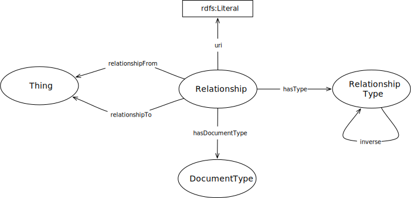

IRI: http://parliament.uk/ontologies/related/DocumentType
IRI: http://parliament.uk/ontologies/related/Relationship
IRI: http://parliament.uk/ontologies/related/RelationshipType
IRI: http://parliament.uk/ontologies/related/Thing
IRI: http://parliament.uk/ontologies/related/hasDocumentType
IRI: http://parliament.uk/ontologies/related/hasType
IRI: http://parliament.uk/ontologies/related/inverse
IRI: http://parliament.uk/ontologies/related/relationshipFrom
IRI: http://parliament.uk/ontologies/related/relationshipTo
IRI: http://parliament.uk/ontologies/related/hasUri
This HTML document was obtained by processing the OWL ontology source code through LODE, Live OWL Documentation Environment, developed by Silvio Peroni.